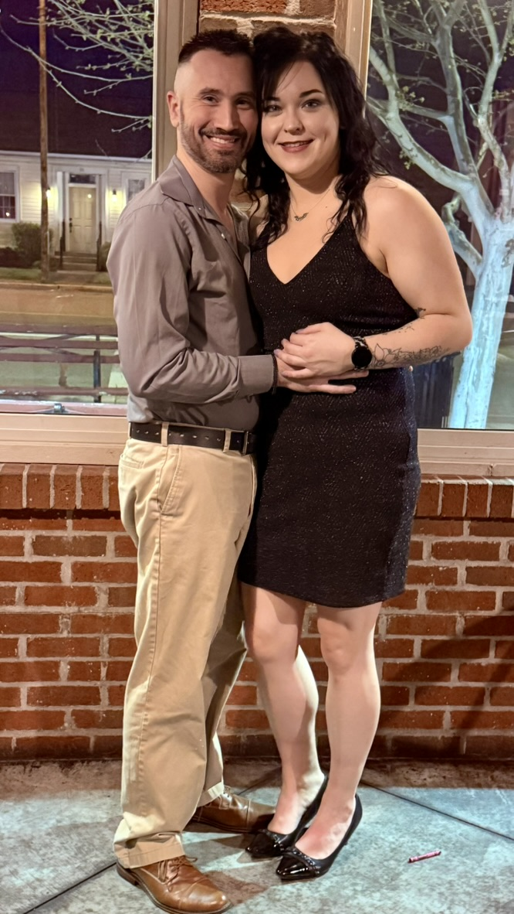
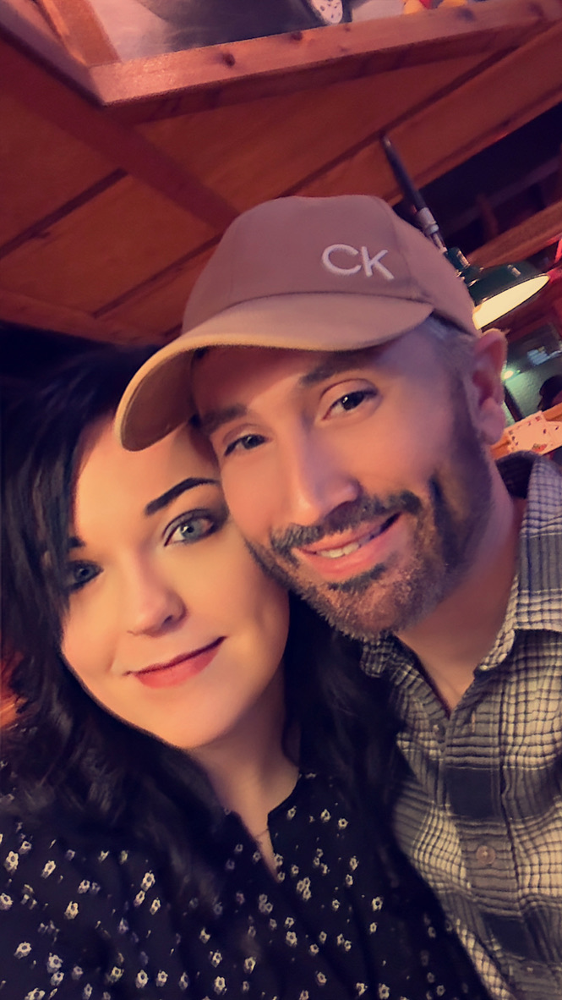
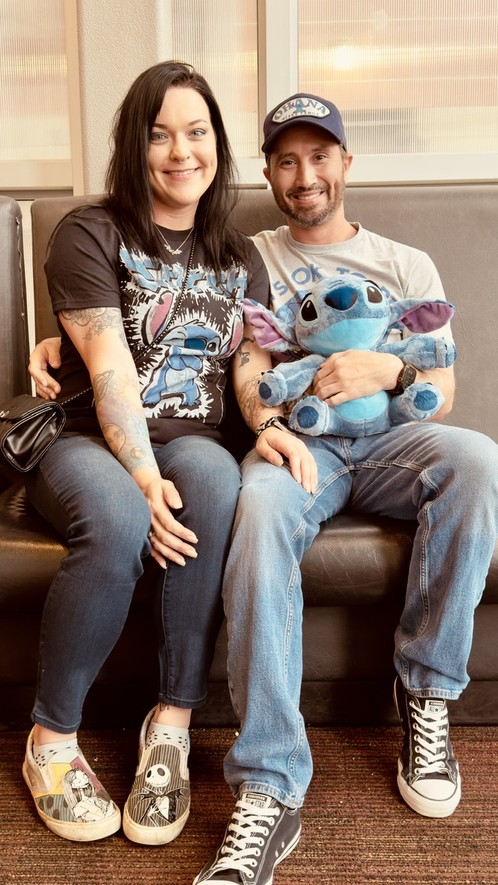
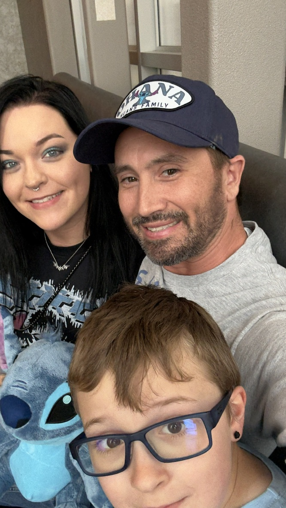
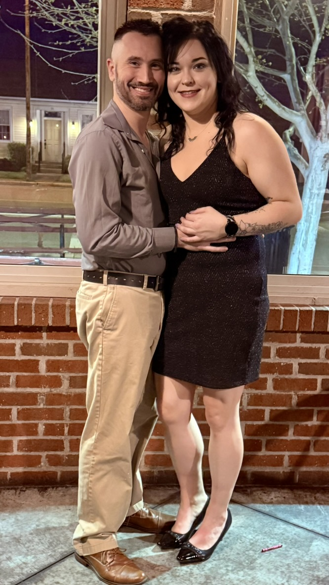
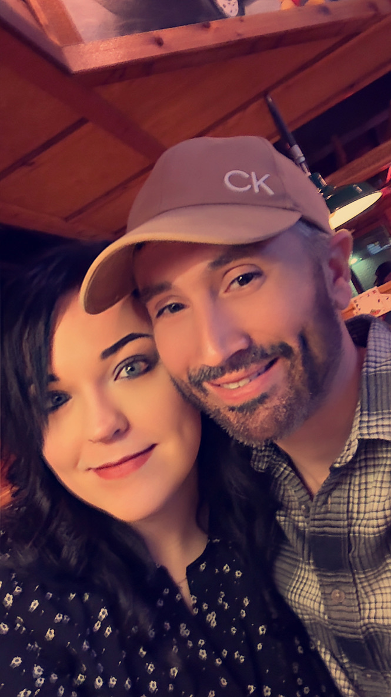
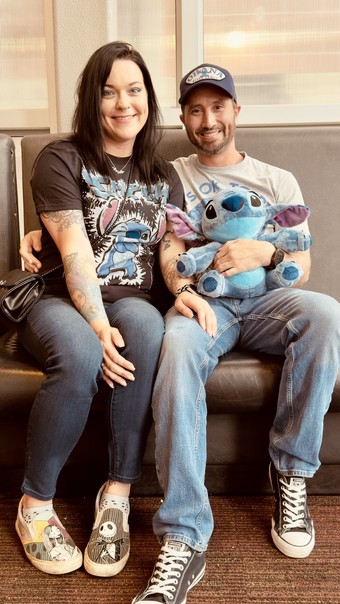
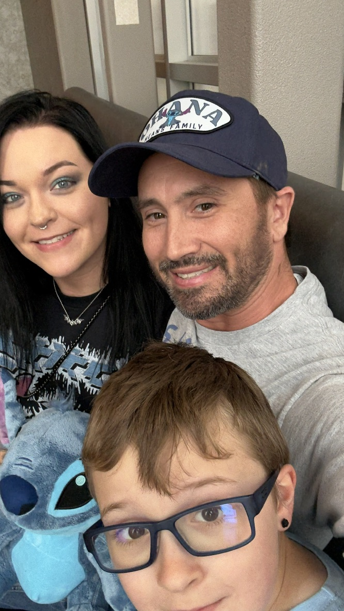

🖤 July 25, 2025
Okay, so I've been MIA from our digital journal like a character who disappears mid-season and everyone's like "where did they go??" Plot twist: I've been building virtual worlds for work, but the only world that actually matters is the one where you and Kai exist. My coding brain has been running at 110% capacity, but my heart's CPU is always reserved for you two.
Fun fact: Did you know that when programmers get tired, they start thinking in code? Well, if I were to write you in JavaScript, you'd be the function that makes everything else work. You're like the main character in my favorite game — the one I never want to put down, the one that makes all the side quests worth it.
Watching you with Kai is like watching the best co-op gameplay ever. You two are an unstoppable team, and somehow you let me join your party. Kai's got your sense of humor and your way of making everything an adventure. It's like you created the perfect little sidekick, and now I get to be part of this epic storyline.
Here's the thing about building virtual reality: no matter how advanced the graphics get, how immersive the experience becomes, nothing compares to the reality of coming home to you. You're better than any game, any world I could ever code. You're the cheat code that makes life actually fun.
So while I'm out here creating digital universes, just know that you and Kai are my favorite reality. You're the reason I keep grinding through these late-night coding sessions — because every line of code I write is another step toward the future we're building together. You're my favorite Easter egg, my secret level, my perfect game. 🎮💕